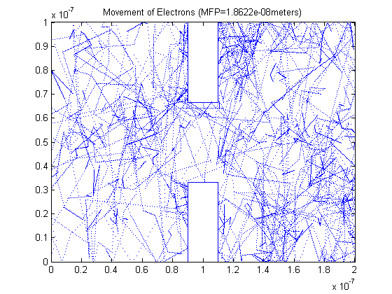
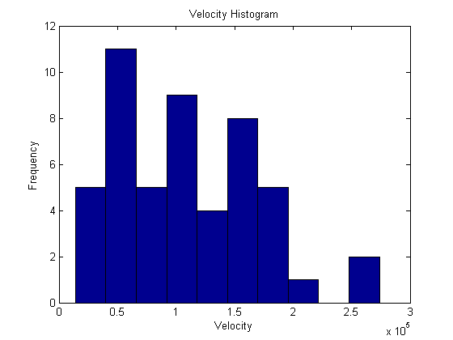
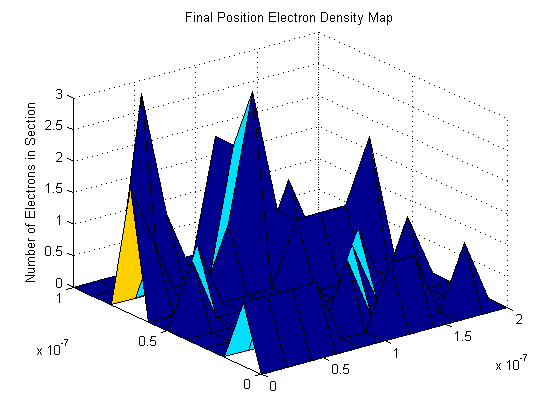
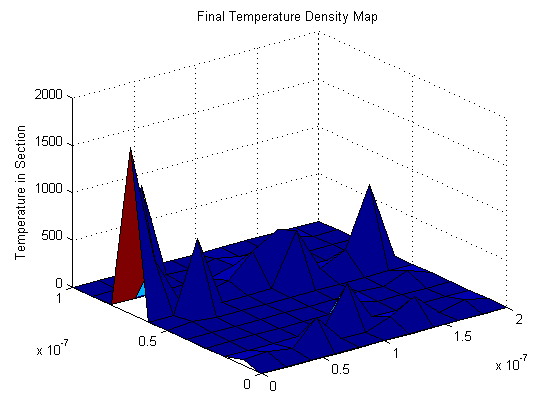

Assignment#1-Part 3:Enhancements
%Jason Gazo (100975245) Date: Feb/04/2018 % % *%%Introduction* %The purpose of this part of the experiment is to observe the movement of %electrons moving inside an N-type Silicon semiconductor crystal. The %effective mass of the electrons is given by multiplying its rest mass %(9.109x10^-31kg)electron by a coefficient. Once the rest mass is found %(2.36634e-31)kg, the thermal velocity can be solved. The thermal %velocity will be solved for a temperature of 300 kelvin. This thermal velocity %is approximately 1.3 e+5 m/s. If we assume electrons collide every %0.2ps, the estimated mean free path for each electron is 2.3e-10 %meters. This script will simply showcase the movement of electrons in a %frame of 200nm x 100nm. The electrons will reflect off the top and bottom %edge of the frame with a reflection angle equal to its incident angle. %When an electron passes through either side edge (left or right) it will %be translated to the opposite edge and its velocity (trajectory included) %will be maintained. The more particles used in this Monte Carlo %simulation will increase the precision of the outputted arguments in this %section. %This simulation will contain scattering events. The scattering event is %described by an exponential scattering distribution. Therefore there is a %probability that the particles will scatter during each iteration of the %movie. The larger the time step (dt), the larger the probability that a %scattering event will occur. %The instantaneous average temperature will not be eqaul to 300k since the %velocities were randomly assigned using a Maxwell-Boltzmann distribution. %This distribution was achieved by assigning each coordinate velocity a %a value from a normal distribution with a standard deviation of the %thermal velocity. Each coordinate velocity has to be divided by square %root of two so that its combined velocity (Vrms) is near the thermal velocity. %The more particles used in the part, the closer the mean Vrms will be to %the thermal velocity. Therefore the more particles used, the closer the %temperature will be to 300k, and the closer the measured mean free path %will be to the expected mean free path. %The running average temperature will approach 300k as more iterations are %performed. %This simulation will contain two boxes which will act as conductive %material. Therefore the free moving electrons will not enter either of the %two boxes. The particles will reflect off a box with either diffusive or %specular behaviour. When specular behaviour is used, the particles will %reflect off an edge of the box with an angle of reflection equal to its %angle of incidence. The magnitude of the velocity would be maintained. For %diffusive boundaries, the particle is re-thermalized when colliding with %the box. Thus, it will reflect with a reflection angle (most likely) %different than its incident angle and the magnitude of the velocity (most %likely) will be different too. %This simulation will conclude with two surface maps. One map will display %where the electrons are most concentrated in the frame. The second map %will display the varying temperature within the frame. If the meshgrid %perfectly wraps around the two boxes, the two regions defined within the box %boundaries should be equal to zero. clc %Mass of particles mo=9.109e-31; m=0.26*mo; %boltzman constant k=1.38064e-23; %Thermal velocity vt=@(t) sqrt(k*t/m); vth=vt(300); fprintf('The expected thermal velocity is %6.4f m/s \n',vt(300)) fprintf('The expected mean time between collisions is 0.2 e-12 seconds \n') %mean time collisions is 0.2 ps tmn=0.2*10^-12; %mean free path mnfreepath=tmn*vt(300); fprintf('The expected meanfreepath is %6.4f e-08 meters \n',mnfreepath*10^8) fprintf('-------------------------------------------------------------\n') %Nominal Size of region is 200nm x 100nm l=200*10^-9; w=100*10^-9; %Time step deltaT=7.562*10^-15; %Number of particles num=50; %The vertical and horizontal coordinate for each particle is generated vertarray=rand(num,1)*w; horarray=rand(num,1)*l; %Question 2 related: The boundaries of the two squares can be specular %(==1) or diffusive (==0). Lets make the boxes have diffusive boundary %conditions for the example: specbounds=0; %Question 1 related: Ensure no particles start inside either of the two boxes good=0; while(good==0) x=((horarray<1.1*l/2 & horarray>0.9*l/2) & (vertarray<w/3 | vertarray>2*w/3)); vertarray(x)=rand()*w; horarray(x)=rand()*l; if(sum(x)==0) good=1; end end %Two arrays are used to store each particles previous coordinate prh=horarray(); prv=vertarray(); %Array of random velocities for each particle vx=randn(num,1).*vth/sqrt(2); vy=randn(num,1).*vth/sqrt(2); %Array will store the total velocity of each particle vrms=sqrt(vx.^2 + vy.^2); %counters and sums for 'average-particle calculations' in the for-loop count=0; total=0; numberofCol=0; check=0; sumtemp=0; totalvel=mean(vrms); %movie runs for 400 iterations for i=1:400 %Horizontal boundary conditions horarray(horarray>=1)=horarray(horarray>=1)-l; horarray(horarray<=0)=horarray(horarray<=0)+l; %vertical boundary conditions IT=(vertarray>=w); vy(IT)=-vy(IT); IT=(vertarray<=0); vy(IT)=-vy(IT); %store previous coordinate for each particle prh=horarray(); prv=vertarray(); %update coordinate for each particle using its x- and y- velocities horarray=horarray+vx.*deltaT; vertarray=vertarray+vy.*deltaT; %Question 1 related: check to see if particles are within either of %the two boxes x=((horarray<1.1*l/2 & horarray>0.9*l/2) &(vertarray<w/3 | vertarray>2*w/3)); %Question 2 related: Specular boundaries are in effect if(specbounds==1 & sum(x)~=0) %Was this 'x' (singular or plural) particle's previous position between the two boxes if((prh(x)<1.1*l/2 & prh(x)>0.9*l/2)) vy(x)=-vy(x); else %otherwise it's likely that it is making contact on the side of a box vx(x)=-vx(x); end elseif(specbounds==0 && sum(x)~=0) %Question 2 related: Diffusive boundaries are in effect (specbounds==0) if((prh(x)<1.1*l/2 & prh(x)>0.9*l/2) & vy(x)>0) vertarray(x)=vertarray(x)-2*(vertarray(x)+2*w/3); vx(x)=randn().*vth/sqrt(2); vy(x)=-abs(randn().*vth/sqrt(2)); elseif((prh(x)<1.1*l/2 & prh(x)>0.9*l/2) & vy(x)<0) vertarray(x)=vertarray(x)+2*(w/3-vertarray(x)); vx(x)=randn().*vth/sqrt(2); vy(x)=abs(randn().*vth/sqrt(2)); elseif(vx(x)>0) horarray(x)=horarray(x)-2*(horarray(x)-0.9*l/2); vx(x)=-abs(randn().*vth/sqrt(2)); vy(x)=randn().*vth/sqrt(2); else horarray(x)=horarray(x)+2*(1.1*l/2-horarray(x)); vx(x)=abs(randn().*vth/sqrt(2)); vy(x)=abs(randn().*vth/sqrt(2)); end rms=sqrt(vx.^2+vy.^2); end %Check for the scattering event pscat=1-exp(-deltaT/(0.2*10^-12)); a=rand(); if(a<=pscat) check=1; numberofCol=numberofCol+1; diff=i-count; count=i; timebtwCol=diff*deltaT; total=total+timebtwCol; avgTime=total/numberofCol;%Running average mean time ave=mean(vrms); %Current Average velocity of particles totalvel=totalvel+ave; averageMFP=avgTime*(totalvel/numberofCol); %Running Mean Free Path %reassign each particle a new velocities vx=randn(num,1).*vth/sqrt(2); vy=randn(num,1).*vth/sqrt(2); vrms=sqrt(vx.^2+vy.^2); end %Comment out temperature plot for this part of assignment Temp=m*mean(vrms.^2)/k; sumtemp=sumtemp+Temp; avgtemp=sumtemp/i; %{ subplot(2,1,2) plot(i*deltaT,Temp,'+') title(['Temperature (Average Temp =' num2str(avgtemp),'kelvin)']); ylabel('Temperature (kelvin)') xlabel('Time') hold on subplot(2,1,1) %} %Plot the movement of the particles. The running average MFP should be %displayed once a scattering event has occured. plot(horarray, vertarray,'.','MarkerSize', 0.1) if(check==1) title(['Movement of Electrons (MFP=' num2str(averageMFP),'meters)']); else title('Movement of Electrons') end xlim([0 l]) ylim([0 w]) %Question 1 related: Create the boxes onto the frame %Box 1 line([0.9*l/2 0.9*l/2],[w 2*w/3]) line([1.1*l/2 1.1*l/2],[w 2*w/3]) line([0.9*l/2 1.1*l/2],[w w]) line([0.9*l/2 1.1*l/2],[2*w/3 2*w/3]) %Box 2 line([0.9*l/2 0.9*l/2],[0 w/3]) line([1.1*l/2 1.1*l/2],[0 w/3]) line([0.9*l/2 1.1*l/2],[0 0]) line([0.9*l/2 1.1*l/2],[w/3 w/3]) hold on pause(0.01) end %End the movie %Plot a histogram, only of the total velocity for this part of assignment figure (3) hist(vrms, 10) title('Velocity Histogram') xlabel('Velocity') ylabel('Frequency') %Question 3 and 4 related: Create density and temperature map %Establish the grid to divide up the frame [binx,biny]=meshgrid(0:l/10:l,0:w/10:w); %This array will count the number of particles in each division of the frame zcheck=zeros(11,11); %This array will store the average temperature in each division of the frame tempcheck=zeros(11,11); counter=0; vtotal=0; %Cycle through each division of the frame for i=1:10 txmn=binx(1,i); txmx=binx(1,i+1); for r =1:10 tymn=biny(r,1); tymx=biny(r+1,1); %Cycle through each particle for mm=1:num %Check to see if particle is within this division of the frame if((horarray(mm)>txmn & horarray(mm)<txmx) & vertarray(mm)<tymx & vertarray(mm)>tymn) counter=counter+1; zcheck(i,r)=zcheck(i,r)+1; vtotal=vtotal+sqrt(vx(mm)^2+vy(mm)^2); if(counter~=0) tempcheck(i,r)=m*(vtotal^2)/(counter*k); end end end vtotal=0; counter=0; end end %Question 3: Plot the electron density map figure(5) surf(binx,biny,zcheck) title('Final Position Electron Density Map') zlabel('Number of Electrons in Section') %Question 4: Plot the temperature map figure(6) surf(binx,biny,tempcheck) title('Final Temperature Density Map') zlabel('Temperature in Section') fprintf('The estimated temperature is %6.4f kelvin \n',avgtemp) fprintf('The estimated mean free path is %6.4f e-08 meter \n',averageMFP*10^8) fprintf('The estimated mean time between collisions is %6.4f e-12 seconds \n',avgTime*10^12)
The expected thermal velocity is 132244.8682 m/s The expected mean time between collisions is 0.2 e-12 seconds The expected meanfreepath is 2.6449 e-08 meters ------------------------------------------------------------- The estimated temperature is 293.0139 kelvin The estimated mean free path is 1.8622 e-08 meter The estimated mean time between collisions is 0.1478 e-12 seconds   
%%Summary:
%The movie continues to run smoothly. The diffusive behaviour of the boxes %restricts the particles from entering. No particles are initialized within %either of the two boxes. The particles reflect off the boxes with an %incident angle different then it's reflective angle (diffusive). However %when specular behaviour is used, the particles do reflect off the boxes %with an incident angle equal to it's reflective angle. The surface plots %were generated. Since the meshgrid didnt perfectly wrap around the two boxes, %some electrons appear to be located inside the two boxes on the denstiy %map. This also occurs in the temperature map. If the boxes had aligned %perfectly with the meshgrid, then these two regions would be more obvious %on the two surface plots. Their temperature and electron density should be %zero in these regions. Overall, this simulation was a success.